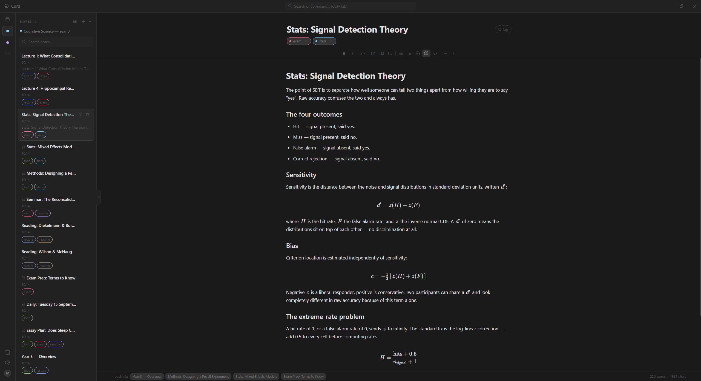
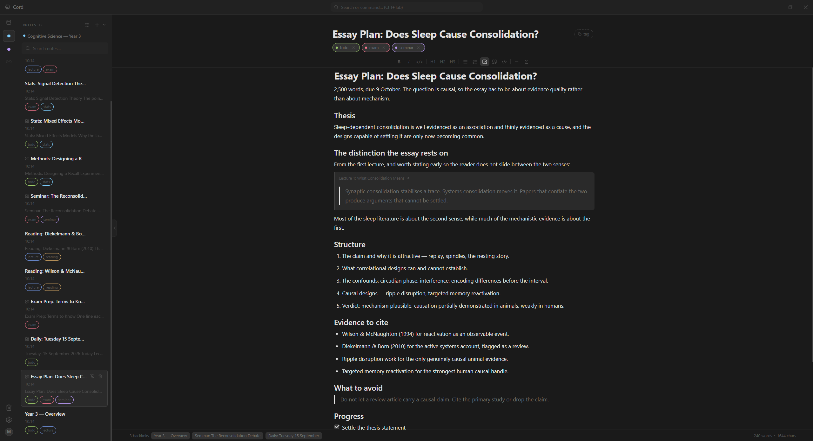
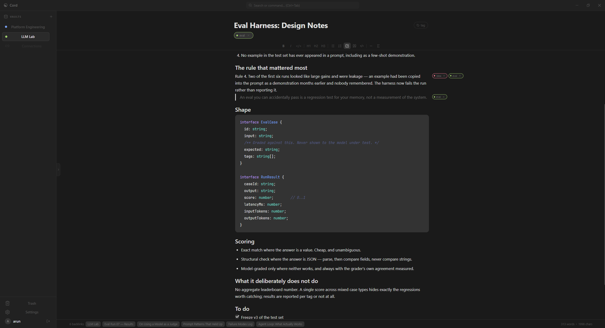
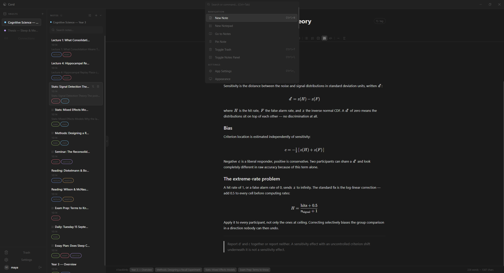

Cord · a desktop notebook
Your notes, and every line between them.
Cord treats notes as a graph. Write with wiki links, tag a single paragraph, quote one note inside another, and keep all of it in a database on your own machine.

Local first
It lives on your machine.
Every note is a row in a SQLite database in your own user folder. Cord works with the network cable pulled out, because it never needed the network. There is no cloud account, no sync service and no telemetry.
Each person who uses the computer gets a local account with a PIN lock screen and their own settings. The lock keeps the next person at the desk out of your notes. It is not encryption, and Cord does not pretend it is; encrypting the database is a later step.
Links
A graph, not a filing cabinet.
Type [[ and link to another note. Every link is visible
from both ends: each note lists what points at it, and mentions of
its title that are not linked yet are picked out so you can link
them.
Vaults keep unrelated work apart. Tags cut across the notes inside a vault. Links are what make the collection worth more than the notes in it.
Notepads
Pages of blocks you can point at.
Cord has two kinds of note. A note is for quick capture. A notepad is a page of blocks (paragraphs, headings, lists, code, tables, maths), and every block has its own stable address.
Tag or link a single block rather than the whole page. Quote a block inside another note and it stays a reference: the text is read from its source every time it is shown, so it cannot go stale. Turning a note into a notepad changes nothing in the document.
Search
Search that keeps up with typing.
Full-text search runs in Rust, straight against SQLite's FTS5 index, inside the app itself. Results arrive as you type, not after you stop.
It matches inside words, so a fragment is enough. The rest of Cord is reachable the same way: a command palette and rebindable shortcuts for everything.
A look at it
Quiet by default.
Seven themes, light and dark. These are the mono dark default.



Install
Download.
Cord 2.0 is in beta. Every installer is built by CI from the same tag; Windows has had the most real use.
-
Windows
Windows 10 and 11, 64-bit ·
.exeDownload -
macOS
Apple Silicon ·
.dmgDownload -
Debian, Ubuntu
x86-64 ·
.debDownload -
Fedora, openSUSE
x86-64 ·
.rpmComing with 2.0 -
Any Linux
x86-64 ·
.AppImageDownload
The installers are not code-signed yet
Windows and macOS will both object the first time. Nothing is wrong; there is simply no certificate behind the binary yet.
- Windows. SmartScreen calls it an unrecognised app. Choose More info, then Run anyway.
- macOS. Gatekeeper refuses to open it. Right-click the app, choose Open, then confirm. Double-clicking does not offer that option.
- Linux. no warning. Mark the AppImage
executable with
chmod +xbefore running it.
The editor
Built on Shuttle.
Cord's editor is its own project: Shuttle, an open-source React editor built on Tiptap 3. Wiki links, notepad blocks, transclusion and markdown that vanishes as you type all come from it. You can put it in your own app too.